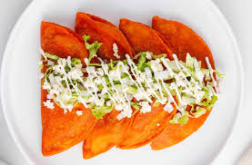

24.San Luis Potosí

- Platillo: Enchiladas potosinas
- Ingredientes: Masa con chile, rellenas de queso y salsa, acompañadas de guarnición.
- Historia: Surgieron por error cuando una cocinera mezcló chile en la masa, y resultaron ser un éxito.
- Dato curioso: Su color rojo característico viene de incorporar chile en la misma masa.